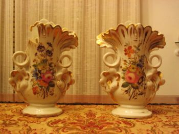
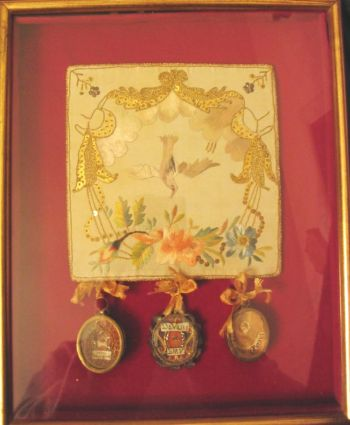
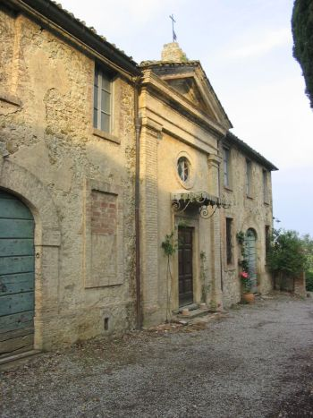
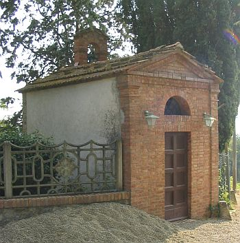
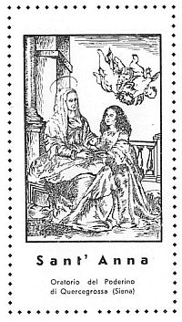
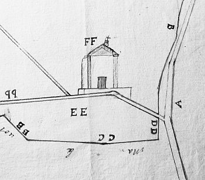

Quercegrossa (Ricordi e memorie)
CAPITOLO VIII - STORIA RELIGIOSA
Indice dei Capitoli
Indice Storia religiosa
Cappelle e oratori
Oltre alle chiese maggiori di Petroio, Larginano e Quercegrossa, che in un passato più o meno lontano hanno svolto il ruolo di sede parrocchiale, già descritte, sono state fondate fin dal Seicento, sul nostro territorio, alcune cappelline su istanza degli antichi proprietari delle relative fattorie di Passeggeri, del Castello, del Castellare e del Poderino. Oratori privati, ma tutti aperti al culto pubblico e officiati con continuità fino agli anni Cinquanta del Novecento dal parroco di Quercegrossa, e in antico, per alcuni, da quelli di Basciano e Vagliagli sul cui territorio si trovavano. Dal 1960 circa, con la fine del mondo agricolo e la scomparsa delle famiglie patrocinanti questi oratori decaddero, praticamente in contemporanea, e oggi si vedono solo porte chiuse di ambienti cadenti e disadorni. Rimane il ricordo un loro importante ruolo locale tenuto in funzione liturgica e ai quali si accostarono con devozione numerose generazioni di fedeli.
Oratorio di S. Antonio da Padova a Passeggeri
Don Ottorino vi celebrò fino agli anni Sessanta e rammento la sua richiesta fatta nel 1956 a mons. Arcivescovo per la celebrazione di una terza messa negli oratori dove sottolineava la presenza di 20 persone a quella di Passeggeri. Sono gli abitanti della fattoria e dei poderi del senatore Sarrocchi che partecipano alla liturgia. Il Senatore mantiene in ordine la cappellina dove vi si dice messa una volta al mese. Dopo la sua morte nel 1950, piano, piano, decadde.
Passeggeri da un disegno del Romagnoli nel 1806/07. A destra la cappellina eretta nel 1688
E’ il più antico di tutti gli oratori considerati e sorge vicino alla villa. La sua fondazione risale al 1688 ad opera del proprietario di Passeggeri che in quell’anno ne chiede la benedizione: “IL Cav.re Pietrangelo Perfetti havendo eretto nella sua villa di Barberino un Horatorio e desiderando che resti benedetto per tanto supplica VS. Ill.ma e Rev.ma di agratiarlo della detta beneditione e quella commettere à chi più piacerà”. Alla domanda era allegata la relazione del parroco di Vagliagli trovandosi l’oratorio sul territorio della soppressa parrocchia di S. Bartolomeo a Coschine, ora di sua competenza. La benedizione venne concessa mettendo dei limiti alle celebrazioni e incaricando il decano della cattedrale Orazio Piccolomini di eseguirla. La relazione predetta redatta dal prete Giuliano Palagi è molto particolareggiata tanto da definire anche le misure dell’aula che risultarono di braccia 10 (6 metri) di lunghezza e braccia 7 (4,2 m.) sia di larghezza che di altezza. Descrive le possibilità che offre al culto “posta in luogo libero et non possono essere impediti li huomini et donne che anderanno per udire la messa” e i paramenti che sono nella norma: pianeta, calice ecc. Sembra che nell’Ottocento, prima dell’avvento dei Sarrocchi, questa cappella sia decaduta perchè nella vista del 1882 al tempo di don Rigatti il Visitatore riferisce: “Esistono nel distretto di questa parrocchia altre due Cappelle, una detta del Bozzone posta vicino a Pontignano di proprietà di un tal Sig. Mezzedimi e l'altra detta di Passeggeri di cui è proprietario un tal Sig. Pallini. Non si visitano perché molto lontane e di difficile accesso. L'economo di Querce grossa ritiene che non si debbano considerare come Oratori, perché i proprietari non ne fanno alcun conto e mai vi si celebra la S. Messa”.
Oratorio di Maria SS. del Buonconsiglio al Castello
Antonio Nencini, di famiglia assai devota già patrona della Cappellania di S. Domenico nella chiesa di Quercegrossa, proprietario della casa padronale del Castello di Quercegrossa, richiede nel 1837, previo sopralluogo della Curia per verificare se ci fossero i requisiti, l’autorizzazione ad aprire un oratorio a cui poteva accedere anche il pubblico, avendo da tempo, per le necessità della sua famiglia, adattato un locale di detta casa a cappella.

Il Rev.do Anton Gaetano Lomi viene incaricato di visitare la casa con la raccomandazione che vi sia l’accesso al pubblico e non abbia servitù di usi domestici e sia dotato di pietra sacra e di tutti gli utensili necessari al culto. Il 6 settembre 1837 si recava a Quercegrossa e ricevuto alla villa del Castello gli venne mostrata quella stanza adibita a cappellina di preghiera della famiglia: “L’ingresso si trova nella parte destra della facciata del palazzo; dalla parte del vangelo vi corrisponde un piccolo giardino e dall’altra la scala che introduce nei quartieri; sopra detta Cappella havvi una stanza che serve da cucina e un dipresso della medesima grandezza al di dietro poi vi è altra stanza ad uso di dispensa.
Due ornamentali vasi da fiori appartenenti alla cappella del Castello. Probabilmente facevano parte dell’originale arredamento.
Nell’interno di tal cappella vi è un altare a stucco con semplice ornato e mensa e cassettone con croce nella base, predella di legno e quadro rappresentante l’immagine di M. SS.ma del Buonconsiglio, titolo delle più volte summentovata Cappella”. Dotata anche dei necessari arredi sacri e soprattutto di una rendita da capitale di lire 62 annue per il mantenimento dei detti arredi e per la celebrazione di tre messe annue, l’istanza del Nencini venne accolta e il 25 settembre l’Arcivescovo emanava decreto di erezione dell’oratorio pubblico titolato alla Madonna del Buonconsiglio.

Stabilì le modalità del culto da tenersi nell’oratorio come la celebrazione di messe nelle giornate d’intero precetto dovevano celebrarsi in orario diverso da quella della parrocchiale e vi autorizzò anche la spiegazione del vangelo perchè i popolani non rimanessero senza. Ordinò che l’oratorio restasse in perpetuo incorporato nella fabbrica e non si erigesse il campanile.
Per più di un secolo la cappellina del Castello ha svolto degnamente la sua funzione sotto i Cerpi e i Pratellesi. Ai tempi della sig.ra Teresa Cerpi vi si recitava il rosario nel mese di maggio, con le contadine del castello e gente di Quercia. Vi arrivavano, e giravano davanti alla cappellina aperta, le processioni delle feste parrocchiali. La cappellina venne controllata più volte in occasione di visite pastorali e nel 1882: “Il Convisitatore, il Cancelliere e l'Economo vanno a visitare la Cappella Cerpi annessa alla Villa del Sig. Paolo Cerpi. Si recita la commemorazione di Maria SS.ma alla quale è dedicata. Si visita l'altare, la Pietra Sacra e gli Arredi e tutto è in buonissima regola.
In questa Cappella si celebra la S. Messa diverse volte l'anno a cura del proprietario”.
Un ricamato fazzoletto portava attaccate le reliquie possedute dall’oratorio del Castello: Il velo della Madonna; la veste della Madonna e un osso di S. Antonio da Padova.
Oratorio di Maria SS. del Buonconsiglio al Castellare

Nella più volte rammentata visita pastorale del 1882 il verbalizzante descrive in modo positivo la cappella del Castellare fornendoci interessanti dati: “Si va quindi a visitare la Cappella del Castellare di proprietà del Sig.re Guido Guidi dimorante in Firenze ma che è a ricevere Mons. Arcivescovo con molta devozione. Si recita il Maria Mater gratia essendo la cappella dedicata a Maria SS.ma. Ricco e bello è l'addobbo di questa Cappella e tutto in buonissimo ordine. Vi si celebra la Festa della Maternità nella 4° Dom. di ottobre per privilegio, e la S. Messa nel tempo della villeggiatura”. Oltre a questa notizia non abbiamo molte informazioni sulla cappella nè quando venne istituita. La data “1820”, esistente sulla banderuola nell’asta della croce, posta su un pilastrino in alto al di sopra la trabeazione della facciata neoclassica, non si riferisce alla fondazione perchè la cappellina esiste già dal 1807, quando è visitata dall’inviato dell’Arcivescovo: “Da Larginano, continuando il viaggio, si visitò la piccola cappellina detta del Castellare di proprietà del Signr Clemente Vannini la quale è dedicata a Maria SS. del Buonconsiglio. Manca in essa la vetrata al finestrino che vi à in cornu epistole e vi sono dei cretti da risarcire negli angoli”. L’Arcivescovo stesso poi la trovò “sufficientemente corredata di arredi Sacri nella quale per consueta devozione si fanno dire dal sig. Vannini 12 messe ogni anno, una per ciascun mese”. L’ingresso della cappella, che si trova inserita in un esteso corpo fabbrica, è protetto da una originale copertura metallica e sulla porta la scritta “Deo Optimo Maximo” e altra illeggibile. Sia il parroco di Basciano, sia quello di Quercegrossa dal 1884, non ebbero mai nessun obbligo a celebrarvi.
Oratorio di S. Anna al Poderino
Dedicato a S. Anna (madre della Madonna) esso venne fondato dalla famiglia Regoli nel 1950/51 essendo proprietari della metà del Poderino dal 1949. Il Regoli, un geometra del Genio Civile, costrui la cappella e l’arredò con materiale proveniente da varie chiese, dotandola anche di una reliquia di S. Anna. Vi si celebrava solennemente il 26 luglio per la festa della patrona, con diverse messe la mattina dette dai parroci vicini, compreso don Ottorino Bucalossi, il quale, con noi sacrestani, arrivava per mezzo della Sita compiendo a piedi il tratto sterrato. “Per la festa di S. Anna si celebravano tre messe. Venivano i parroci di Quercegrossa, S. Leonino, Fonterutoli, e Lornano che concelebravano l'ultima delle undici. I Regoli offrivano il pranzo ai sacerdoti intervenuti”. La sera poi arrivava tanta gente e ballavano.


L'Oratorio di S. Anna al Poderino e il santino di "Sant’ Anna" stampato in occasione dell’inaugurazione dell’oratorio.
S. Stefano alla Ripa

Prima di concludere questa carrellata sugli oratori, voglio rammentare l’antica chiesa di S. Stefano alla Ripa che servi fino al 1884 molte famiglie di Quercegrossa e dei poderi annessi a Basciano. Sulla fine dell’Ottocento, al tempo di don Rigatti economo, la chiesa cominciò a manifestare pericolosamente i primi segni di rovina, e col rifiuto dei patroni Piccolomini a restaurarla, cadde nell’abbandono, tanto da franare nei primi decenni del Novecento e sparire del tutto. Era situata in quel campo di fronte al Madonnino di S. Stefano e una cartina disegnata a mano ce la ricorda.
Paragrafo successivo
Le opere d'arte
Inizio pagina
Vai all'Indice dei Capitoli
|